O QUE SÃO ESTRELAS
As Estrelas são corpos celestes que têm luz própria.
Elas são, na verdade, esferas gigantes compostas de gases
que produzem reações nucleares mas, graças à gravidade, podem
se manter vivas (sem se explodir) por trilhões de anos.
Na nossa galáxia - a Via Láctea - existem mais de cem bilhões de estrelas. O Sol é uma delas
Durante parte de sua vida, uma estrela brilha devido à fusão nuclear do hidrogênio em seu núcleo,
liberando energia que atravessa seu interior e irradia para o espaço sideral. Quase todos os elementos da natureza mais
pesados que o hélio foram criados por estrelas, seja pela nucleossíntese estelar durante as suas vidas ou pela nucleossíntese
de supernova, quando explodem.
Uma estrela se forma pelo colapso de uma nuvem de material,
composta principalmente de hidrogênio e traços de elementos mais pesados. Uma vez que o núcleo
estelar seja suficientemente denso, parte do hidrogênio é gradativamente convertido em hélio pelo processo de fusão nuclear.O
restante do interior da estrela transporta a energia a partir do núcleo por uma combinação de processos radiantes e convectivos.
Para mais informação click aqui
Acrux
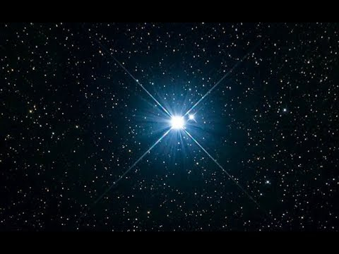
Alpha Crucis, conhecida como Acrux e Estrela de Magalhães, é a estrela mais brilhante da constelação de Crux.
Com uma magnitude aparente combinada de cerca de 0,8, é também a 13ª estrela mais brilhante do céu. De acordo
com sua paralaxe, está localizada a aproximadamente 320 anos-luz da Terra.
Uma destacada estrela branca do hemisfério sul que é a mais brilhante da constelação de Crux, ou Cruzeiro do Sul,
por isso também denominada Alpha Crucis. É uma estrela binária visual, com uma separação angular de 4 segundos de arco,
onde ambas as componentes são binárias espetroscópicas.
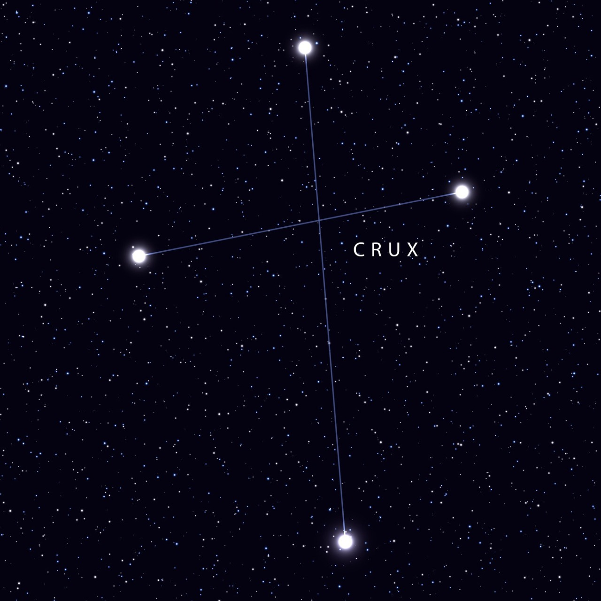
Constelação muito fácil de se localizar por, apesar de ser a mais pequena de
todas as constelações oficiais, apresentar um formato bastante óbvio, desenhado por estrelas
brilhantes, o Cruzeiro do Sul é reconhecido no céu desde há muitos séculos atrás por várias culturas
ancestrais do hemisfério Sul.
Sendo a constelação meridional mais famosa, o Cruzeiro do Sul
aparece nas bandeiras de diversas nações. A sua forma característica foi um
marco para a navegação durante séculos, pois o extremo superior da cruz aponta o
caminho para o Polo Sul celeste.
Devido à sua distância esta constelação só passou a figurar nos mapas como
entidade separada a partir de 1952, tendo até aí feito parte de Centauro.
O Cruzeiro do Sul contém o par de opostas mais impressionante (designadas por
Caixa de Jóias e Saco de Carvão) cravadas na Via Láctea meridional.
Achernar
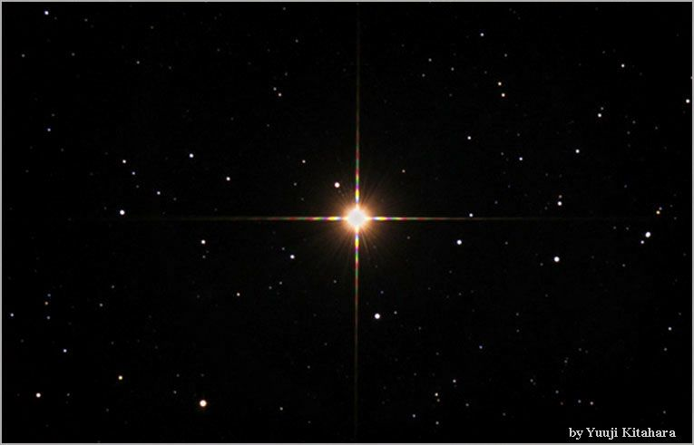
Aldebaran é uma estrela gigante vermelha situada a cerca de 65 anos-luz de nós,
seu diâmetro é cerca de 45 vezes o diâmetro do Sol. A temperatura na superfície
desta estrela é de cerca de 4.000 K, ou seja, é uma estrela relativamente fria..
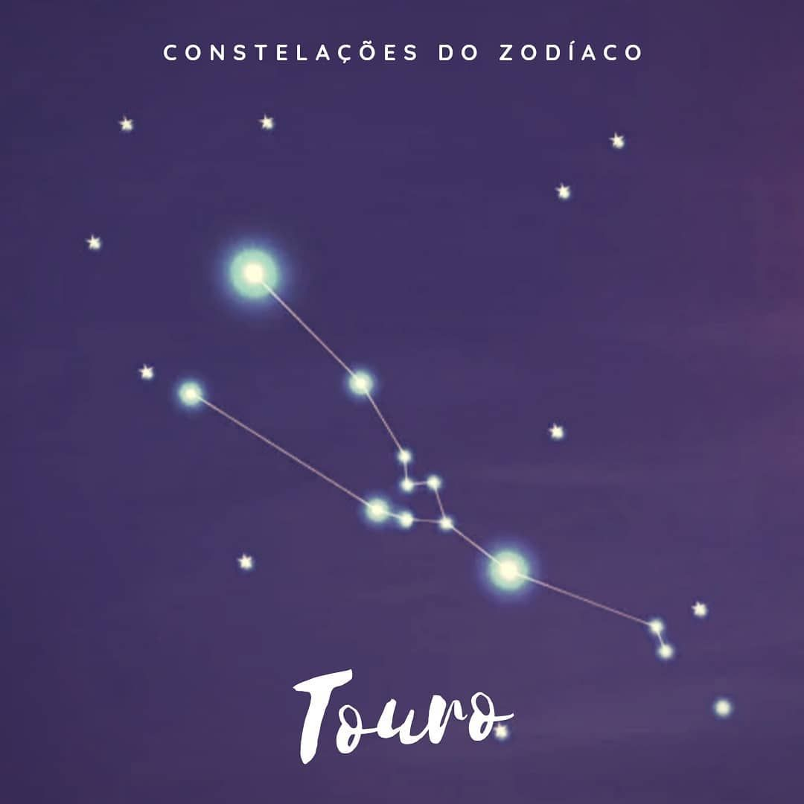
Aldebaran é uma estrela avermelhada e a mais brilhante do Touro, facilmente observada.
Mas voltando às Plêiades, sete estrelas se destacam. São elas: Merope, Maia, Alcione, Asterope, Electra,
Taigete e Celeno. Elas receberam o nome das sete filhas de Atlas e Pleione, segundo a mitologia grega.
Altair
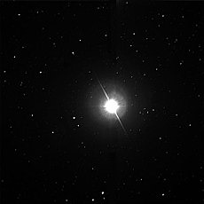
Altair leva cerca de 10 horas para girar em torno de seu próprio eixo, ao passo que o Sol, por
exemplo, faz a mesma rotação em cerca de 25 dias e a terra o faz em 24 horas. Por isso aquela
estrela sofre um achatamento. A estrela tem menos de um bilhão de anos. O Sol, em comparação,
tem 4,5 bilhões de anos.
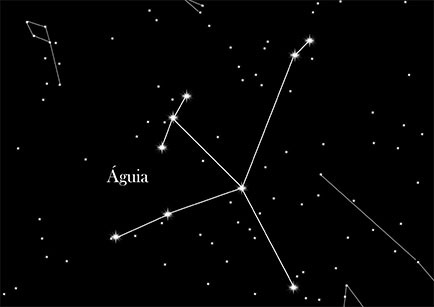
Estrela próxima do Sol, de cor branca e a mais brilhante da constelação de Aquila ou Águia.
Por isso também pode ser denominada por Alpha Aquila. Altair é uma estrela dupla visual,
sendo a estrela companheira francamente menos brilhante, tendo uma magnitude de 10. Altair
está situada na região central da ave imaginada e por isso é por vezes chamada coração da
águia. Esta estrela faz parte ainda de um segundo desenho imaginado, que. não sendo uma
constelação oficial, é ainda assim bastante conhecido: o Triângulo de verão, onde as outras
duas estrelas do triângulo são Vega e Deneb, respetivamente as estrelas Alpha de Lyra (Lira)
e de Cygnus (Cisne). Magnitude aparente: 0,77; magnitude absoluta: 2,3; classe espetral: A7
Vn; distância: 5,0 parsec ou 16,3 anos-luz.
Antares
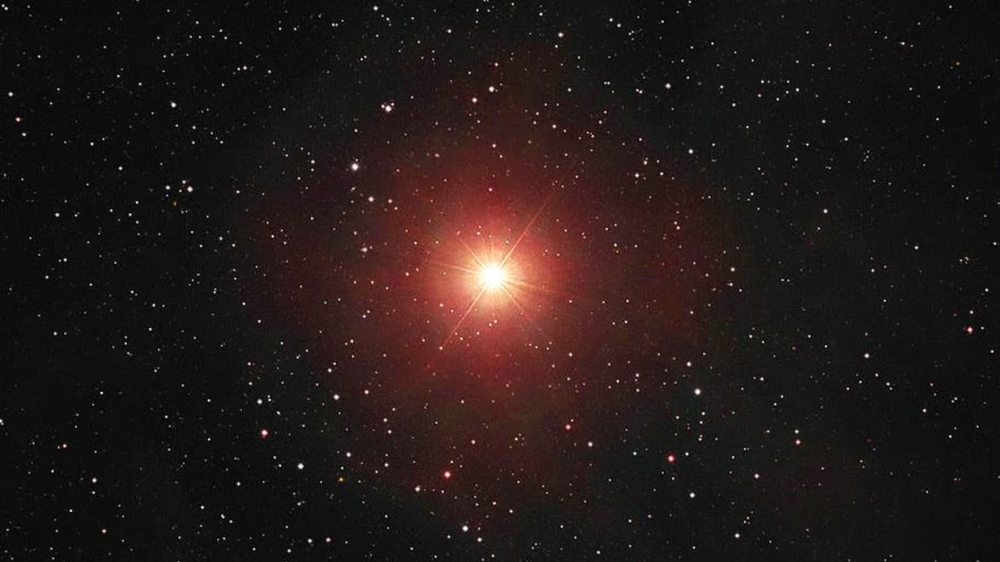
Antares é uma estrela gigante vermelha enorme e relativamente fria nos últimos estágios de sua existência
antes de se tornar uma supernova. Os astrônomos consideram que é uma supergigante vermelha típica.
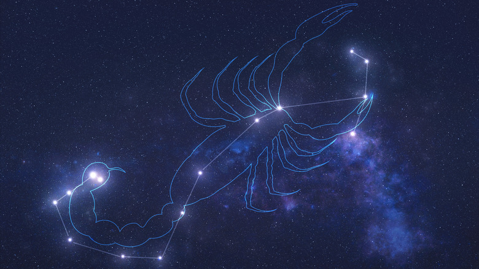
Antares está a aproximadamente 600 anos-luz (180 pc) da Terra. A sua luminosidade visual é de cerca
de 10 000 vezes a do Sol, mas como a estrela irradia uma parte
considerável de sua energia na parte infravermelha do espectro, a sua luminosidade bolométrica é de 65 000 vezes a solar.
Antares localiza-se no coração do escorpião, com seu nome que se traduz como “anti-Ares” ou “como Marte”, referindo-se à
semelhança do tom vermelho da estrela com o planeta Marte.
Betelgeuse
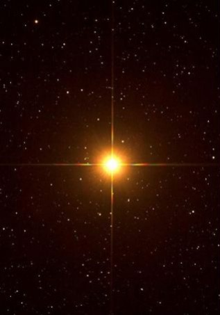
Betelgeuse é uma estrela muito grande, luminosa e fria classificada como uma supergigante vermelha de tipo espectral M1-2 Ia-ab. A letra "M" indica que ela é uma estrela vermelha pertencendo à classe espectral M, tendo portanto uma temperatura superficial baixa; o sufixo "Ia-ab" é a classe de luminosidade da estrela e indica que ela é intermediária entre uma supergigante de luminosidade normal e uma supergigante de alta luminosidade
Supergigantes vermelhas como Betelgeuse são estrelas massivas que já saíram da sequência principal e estão nas últimas etapas de sua evolução. Essas estrelas consomem seu combustível rapidamente e vivem por apenas alguns milhões de anos. Originalmente uma estrela de classe O da sequência principal, Betelgeuse já consumiu todo o hidrogênio em seu núcleo, resultando na contração do núcleo pela força da gravidade. Para balancear o núcleo mais quente e denso, as camadas externas da estrelas expandiram e esfriaram.
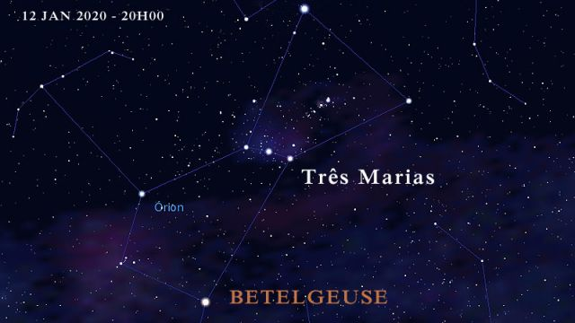
Alpha Orionis (Orionis), conhecida como Betelgeuse, é uma estrela de brilho variável sendo a 10ª ou 12ª estrela mais brilhante das que podem ser vistas da Terra. É também a segunda estrela mais brilhante na constelação de Orion.
A estrela é massiva o suficiente para eventualmente começar a fusão de elementos mais pesados, passando por etapas de fusão de carbono, neônio, oxigênio e silício, até a formação de um núcleo de ferro, que vai sofrer colapso gerando uma supernova de tipo.
.
Canopus
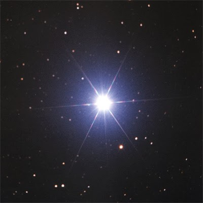
Ela é uma supergigante branco-amarelada, 65 vezes maior e 20 mil vezes mais luminosa que o Sol. No palco celeste,
Canopus é literalmente uma superstar, e no céu de muitos planetas de outros sistemas solares, provavelmente
é a mais brilhante.
Canopus é fácil de identificar pois fica próxima de Sirius, a estrela mais brilhante do céu noturno. Encontre a constelação de Carina,
perto do Cruzeiro do Sul, e lá estará ela. Se possuir um par de binóculos,
encontrará aglomerados fascinantes nessa região.
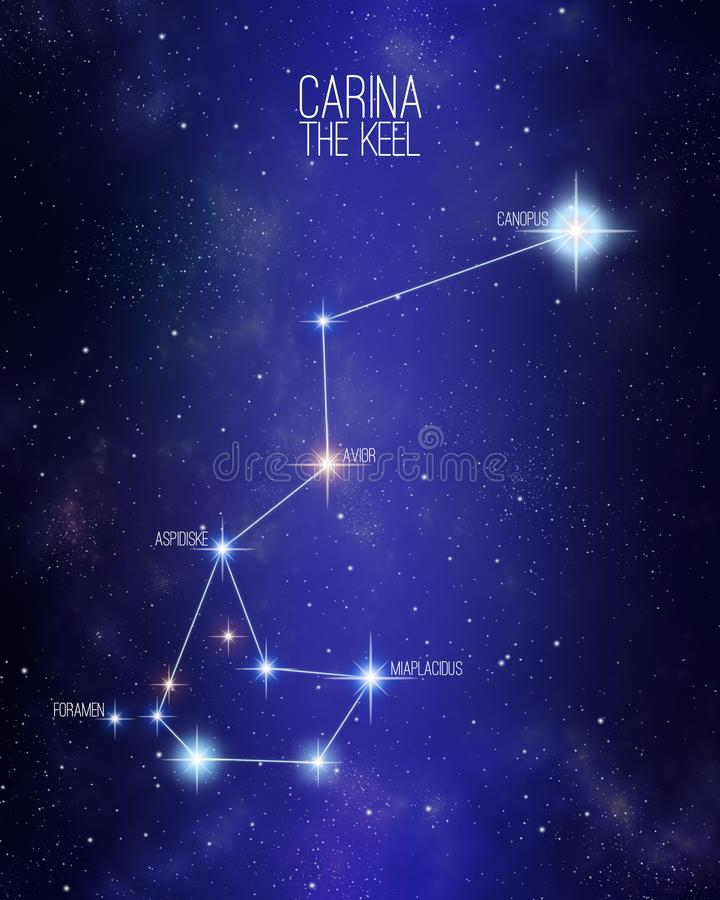
Canopus está, segundo o satélite Hipparcos, a 310 anos-luz (96 parsecs) de nosso sistema solar
(baseado na medida de paralaxe de 10,43 ± 0,53 arcseg). Antes de Hipparcos, a distância estimada
da estrela tinha uma ampla variação que ia de 1200 anos-luz até próximo a 96 anos-luz; se os dados
fossem corretos, Canopus seria uma das estrelas mais poderosas de nossa galáxia. Como é, ela é cerca
de 20.000 vezes mais brilhante que o Sol. É muito mais luminosa , intrinsecamente, que a estrela solitária
que parece brilhar mais que ela vista da Terra — Sirius que é apenas 22 vezes mais luminosa que nosso sol, e depende
de estar muito mais próxima de nós para superar sua rival em magnitude aparente.
Na realidade, para uma grande fração de estrelas nas proximidades da posição estelar, Canopus é a "estrela mais brilhante no céu".
.
Capella
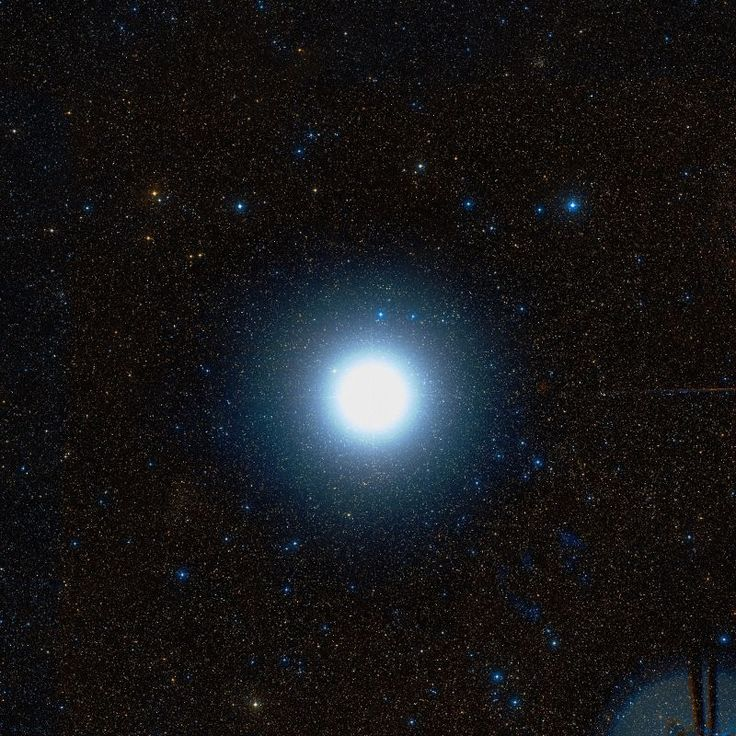
Vejamos o caso de Capella, a estrela mais brilhante de Auriga, o Cocheiro.
A constelação do Cocheiro representa um homem que tem na mão direita um chicote,
enquanto a mão esquerda segura (em algumas ilustrações, sustenta nas costas) uma pequena cabra:
é Capella, nome que significa cabrita. CABRITA (Capella) é a estrela Alfa da constelação do Cocheiro.
Na mitologia greco-romana, Capella é Amaltéa, uma ninfa filha do rei de Creta que cuidou de Júpiter
quando ele ainda era bebê e se refugiava da voracidade de seu pai, Saturno, que queria devorá-lo.
Segundo outra versão, Capella é a própria cabra que amamentou Júpiter naquela ocasião.
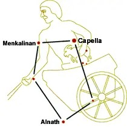
A estrela Capella fica a cerca de 42 anos luz de distância. O Sol fica a 8 minutos-luz de nós, mas
Capella é 150 vezes mais brilhante que o Sol. Ela está entre as “Dez Mais” do céu, figurando na sexta
posição no ranking das mais brilhantes. Facilmente visível a olho nu entre as constelações de Touros
e Gêmeos, o pontinho de luz de Capella parece querer dizer que vemos apenas um astro. Mas é apenas um
disfarce. Capella é uma componente de um sistema formado por duas estrelas gigantes e amarelas,
com massas 2,6 e 2,7 vezes a massa do Sol (uma delas é 9 vezes maior que o Sol e a outra é 12 vezes maior).
Elas se movem uma em torno da outra a meros 113 milhões de km (menos que a distância da Terra ao Sol).
Hadar
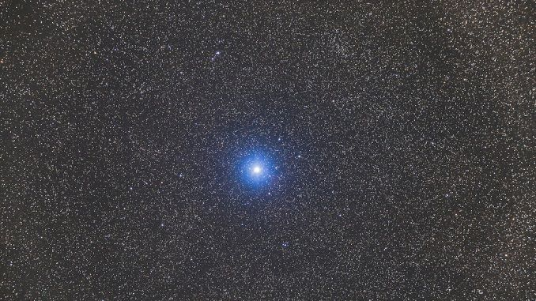
Beta Centauri tem uma magnitude aparente visual de 0,60,[1] sendo facilmente visível a olho nu mesmo
em regiões urbanas com bastante poluição luminosa. É a décima ou 11ª estrela mais brilhante do céu noturno
(dependendo do brilho de Betelgeuse, que é variável) e a segunda mais brilhante da constelação de Centaurus
. Seu índice de cor B-V de -0,22[1] indica que tem uma coloração azul-branca, típica de estrelas de classe B.[7]
Está a apenas 4,5° de Alpha Centauri, a estrela mais brilhante da constelação e terceira do céu. As duas estrelas
são conhecidas como "ponteiros" até o Cruzeiro do Sul; uma reta passando por elas passa a menos de um grau de Gacrux,
a estrela no topo da Cruz. A reta que passa por Gacrux e Acrux é frequentemente usada para determinar o sul.[8]
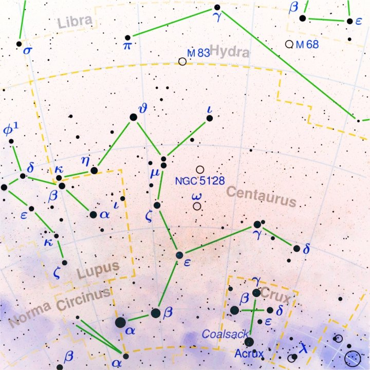
Beta Centauri (β Centauri, β Cen), também conhecida como Hadar ou Agena, é a segunda estrela mais brilhante da constelação de Centaurus
e a décima mais brilhante do céu, com uma magnitude aparente de 0,60. Está a uma distância de 361 anos-luz (110,6 parsecs) da Terra.
Com base em uma declinação de -60°,[1] Beta Centauri pode ser vista de todo hemisfério sul, sendo circumpolar a sul do paralelo 30 S. No
hemisfério norte a estrela é visível apenas a sul do paralelo 30 N. Sua data de culminação às 21h é 7 de junho e à meia-noite é 23 de abril.
Beta Centauri (β Centauri, β Cen), também conhecida como Hadar ou Agena, é a segunda estrela mais brilhante da constelação de Centaurus e a décima
mais brilhante do céu, com uma magnitude aparente de 0,60. Está a uma distância de 361 anos-luz (110,6 parsecs) da Terra.
Procyon
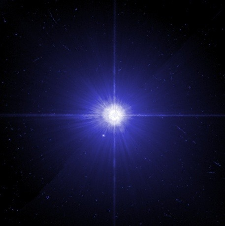
É uma estrela que também pede diversidade e que se busque ativamente o novo.
Pode trazer imprudência e acomodação. Pode trazer posições de comando e em geral indicam pessoas ativas e versáteis.
Atualmente está 26 graus e 04 minutos do signo de Câncer.
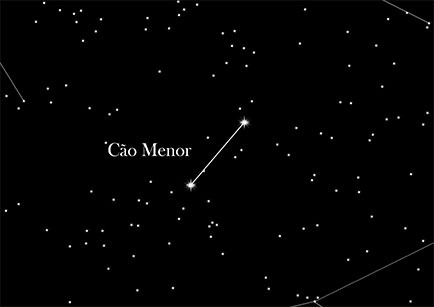
Procyon faz parte da constelação do Cão Menor e é um estrela que fala sobre coisas que estão em transição. Ela surge
antes de Sirius, a estrela mais brilhante, que está no Cão Maior.
A estrela Procyon pode indicar um brilho forte, mas que muitas vezes pode ser passageiro. Quem a tem,
precisa aproveitar cada momento de brilho antes que ele passe. Até porque um
brilho pode levar ao outro e, bem vivida e aproveitada, pode indicar coisas incríveis na vida.
Rigil
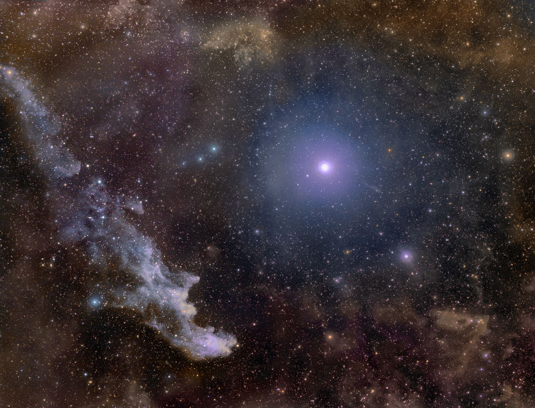
Rígel está além do alcance atual de medidas precisas de paralaxe. Estudos espectroscópicos estimam uma distância entre 700 e
900 anos-luz (210 a 280 parsecs), enquanto o "melhor palpite" da sonda Hipparcos é 773 anos-luz (237 parsecs), com uma margem
de erro de 19%. Rígel é uma supergigante azul de 18 massas solares, e tem cerca de 85 000 vezes a luminosidade solar.[3] Rígel é
a estrela mais luminosa na região do Sol na Via Láctea, e
é tão luminosa que se fosse vista a uma distância de uma UA, ela teria um diâmetro angular de 35° e a sua magnitude aparente seria -38.
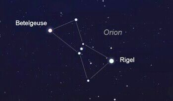
Rigel é a estrela mais brilhante na constelação de Orionte. Está classificada como a sétima estrela mais brilhante no céu noturno.
Curiosamente, Rigel tem apenas 10 milhões de anos de idade, por comparação com o nosso Sol, que tem 4,5 mil milhões de anos
O nome mais formal para Rigel é Beta Orionis, enquanto Betelgeuse ganhou o título científico de Alpha Orionis. Sendo a supergigante
azul mais brilhante do céu,
sua luminosidade obscurece uma de suas características mais interessantes – as outras estrelas que compõem esse sistema múltiplo de es
trelas
Rigil Kentaurus
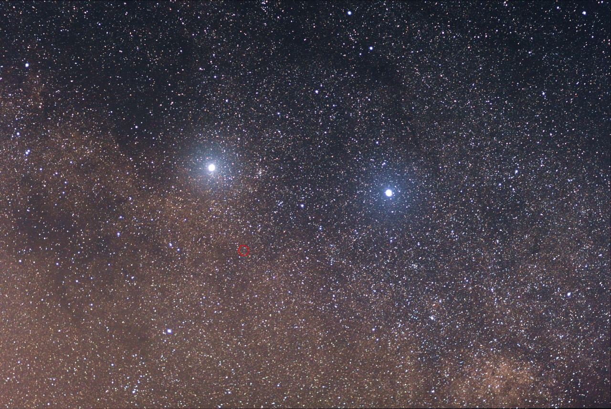
Ao lado do Cruzeiro do Sul (a leste) encontramos duas estrelas de brilho notável que parecem tomar conta da menor das constelações.
Não é à toa que ambas são chamadas de Guardiãs
ou Guardas do Cruzeiro em países de linguas portuguesa e espanhola, e Apontadoras
ou Indicadoras (Pointers) no países de lingua inglesa.
Rigil Kentaurus. a mais comum, vem do árabe “Rijl al-Qantūris”, que quer dizer “Pé do Centauro”. A palavra Rigil podemos
encontrar em outras constelações, como em Órion, por exemplo,
sob uma grafia diferente indicando o pé daquele caçador. Há uma forma resumida de Rigil Kentaurus (Rigil Kent) que também é utilizada.
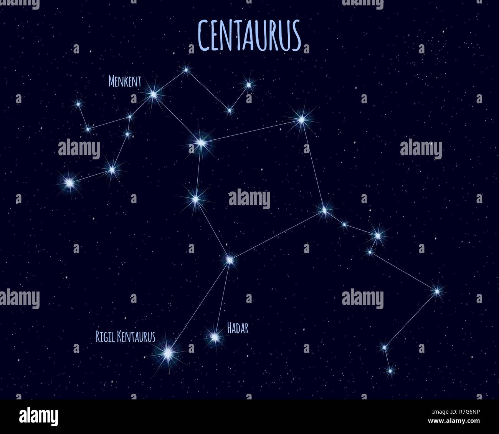
Outro nome que costumamos encontrar nos livros é Toliman. Sua origem é controversa.
Uma bem conhecida é que Toliman vem da palavra árabe “Al-Thalimain”, que significa “Avestruzes”. Até o momento não há
registros históricos ou mitológicos árabes ou europeus fazendo qualquer associação da constelação do Centauro ou daquela
região do céu com essa ave, mas para alguns povos indígenas da América do Sul as estrelas alfa e
beta do Centauro representam dois ovos grandes que uma ema (animal similar ao avestruz) acabara de engolir. Talvez seja
apenas coincidência.
Seja qual for o nome utilizado, devido à sua proximidade com o nosso Sol essa
estrela tem sido bastante citada entre os difusores da Astronomia. Só deve então
tomar cuidado com a maneira de pronunciar o nome da estrela se for optar em chamá-la
conforme a nomenclatura criada por Bayer no século XVII.
É incorreto chamar a estrela de “Alfa Centauro”. A forma correta é Alfa Centauri (com I
no final) , com o genitivo da constelação sendo utilizado junto à letra grega. Como no latim
o genitivo serve para indicar posse, a tradução de Alfa Centauri fica então “Alfa do Centauro”.
Sirius
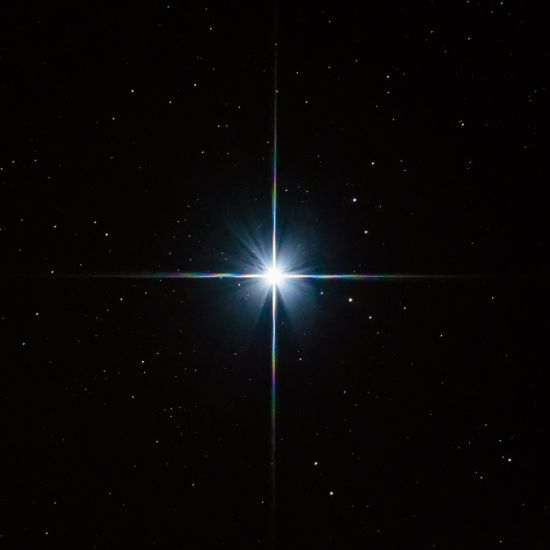
Sirius, também conhecida como Sirius A, Sírio, α CMa, α
Canis Majoris ou alpha Canis Majoris (latim: Alfa do Cão Maior)
é a estrela mais brilhante do céu noturno da Terra. O nome significa "
incandescente" em grego, uma descrição apropriada,
já que apenas alguns planetas, a lua cheia e a Estação Espacial
Internacional ofuscam esta estrela.
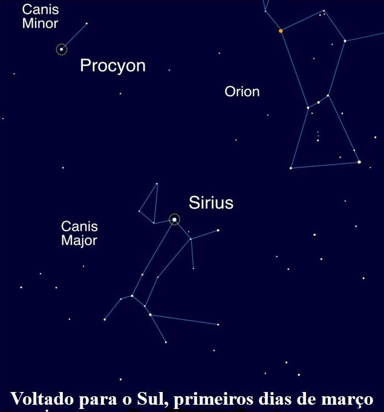
Sirius é altamente visível no céu noturno de inverno do Hemisfério Norte, No Hemisfério Sul,
a estrela Sirius é visível para todos os locais ao norte do Círculo Antártico durante o verão,
porque a estrela tem uma alta luminosidade, ou brilho intrínseco, em relação a outras estrelas,
e porque está relativamente perto da Terra (8,6 anos-luz de distância). De acordo com a NASA, Sirius
tem uma massa que é duas vezes a do sol da Terra. Se a estrela fosse colocada ao lado
do nosso Sol, Sirius iria ofuscá-la mais de 20 vezes, de acordo com a Imagem do Dia da Astronomia da NASA.
Spica
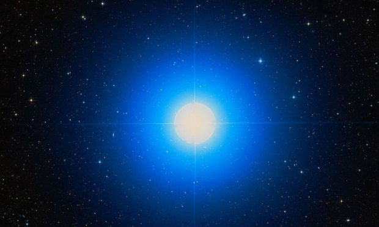
Spica é uma estrelas utilizadas para navegação marítima, permitindo calcular a latitude e longitude. Por estar a apenas 2,06 graus da eclíptica, a
estrela pode ser ocultada pela Lua e, raramente, por planetas.
A estrela primária do sistema – a Spica A – é uma subgigante azulada pertencente à
classe espectral B1 III-IV, tendo uma massa 11 vezes maior do que o Sol, raio 7 vezes o
solar e sendo 12 mil vezes mais luminosa que a nossa estrela.
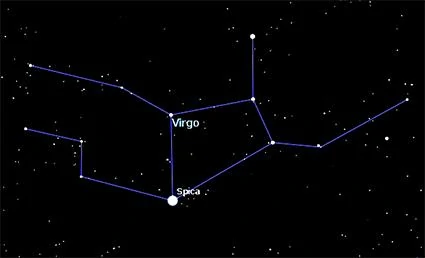
Embora a olho nu pareça uma estrela isolada, Spica é na verdade um sistema binário
e está a quase 260 anos-luz da Terra. A estrela principal do sistema binário possui tipo
espectral B1 III-IV, sendo uma subgigante e sua companheira é uma estrela de tipo espectral
B2V, uma estrela anã azulada. O sistema estelar de Spica é um sistema binário cerrado, estando
as duas componentes muito próximas entre si, com separação estimada em 20 milhões de quilômetros,
o que equivale a apenas 13% da distância média Terra-Sol. Devido a esse fato a binaridade não é sequer
detectada através da observação telescópica, mas apenas através da técnica da espectroscopia.
Na bandeira do Brasil representa o estado do Pará. O mesmo Estado citado também representa Spica em sua
bandeira oficial, como uma estrela solitária azulada no centro da bandeira.
Vega
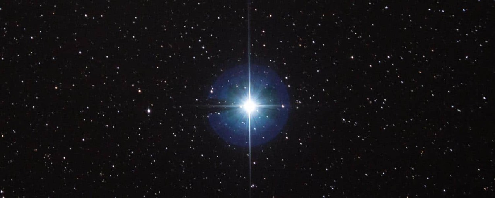
Vega tem um anel de poeira e gases a sua volta, o que na época de sua descoberta, nos anos 80, imaginou-se
ser um início de formação planetária, mas estudos mais recentes chegaram a conclusão de que mais
provavelmente se trata de detritos de massas celestes, devido exatamente a idade relativamente jovem
de Vega. Mesmo que ali
existam planetas, é pouco provável que exista vida neles, devido ao pouco tempo de formação da estrela.
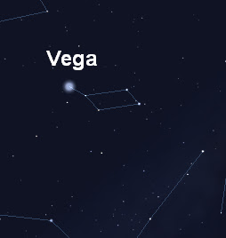
Vega (α Lyr, α Lyrae, Alpha Lyrae), é a estrela mais brilhante da constelação de Lira e a
quinta estrela mais brilhante do céu noturno. Ela está separada do nosso sistema solar por 25 a
nos-luz, o que a torna uma das estrelas mais próximas do nosso Sol. Vega forma com Altair e Deneb o
chamado Triângulo de Verão. Vega foi provavelmente a primeira estrela a ser fotografada de forma bem
sucedida. A magnitude aparente de Vega é usada como referência para as demais, sendo essa magnitude
definida como zero. Há 14.000 anos Vega era a estrela Polar,
e será novamente dentro de 12.000 anos, desbancando a atual estrela Polaris da posição.